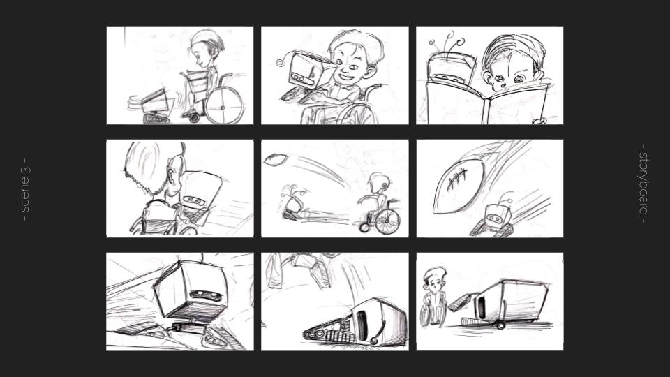
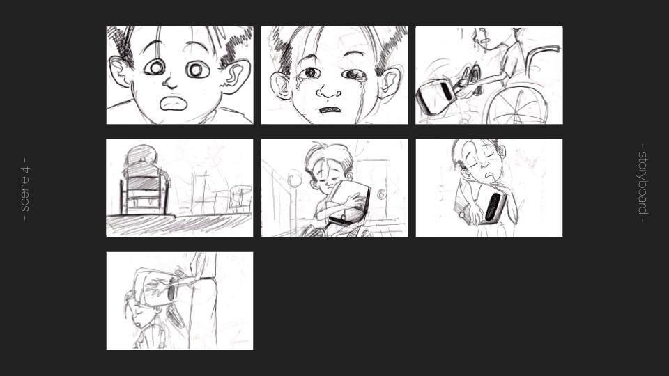
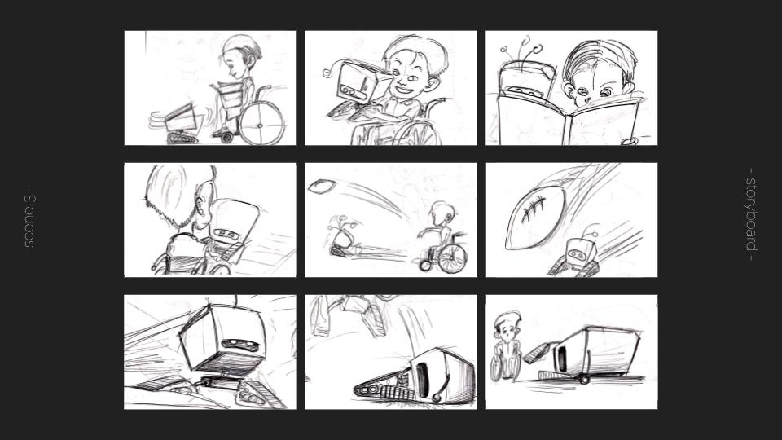
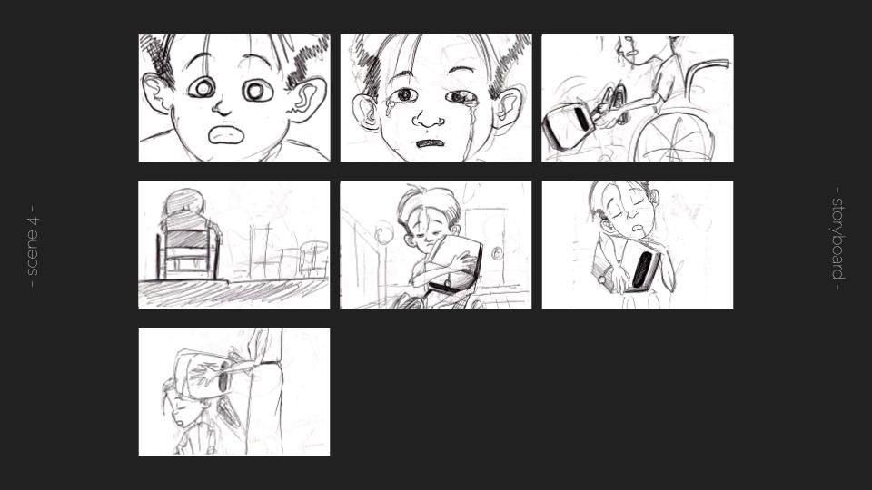

H A R O L D ' S T O Y'
the process
story
In SIAT's 3D Animation course, my team had to create a 3D animated short film based on an existing or an original story with the help of MAYA, a 3D Animation software. 'Harold's Toy' is the story of young Harold who received a brand new robot, from his parents, for his birthday and the young boy quickly got attached to his new best friend.
pre-production
storyboard
For this project, we had to carefully follow the different stages of creating a short film, that is, pre-production, production and post-production. I was in charge of the storyboard stage, where conceptual ideas turn into concrete ideas. I was also involved in modelling, rigging and animating different scenes.

 



production
animating
Characters are one of the most important elements of an animation film. In my sketches, I intend to portray the overall look and personality of the character that will be reflected in the final film. After designing the character, my duty was to illustrate how every scene, from the exposition stage to the resolution, would unfold. I try to incorporate as many emotions as possible, with a variety of shots, ranging from close-ups to long shots, to provide dynamism to the storyboard and the film. The main issues we encountered was time management.
challenges
With a deadline to respect, every member's role was interchained. As a result, the team took decisions together which helped the project to not only be completed on time, but also have a uniform flow, which was reflected in the final piece.